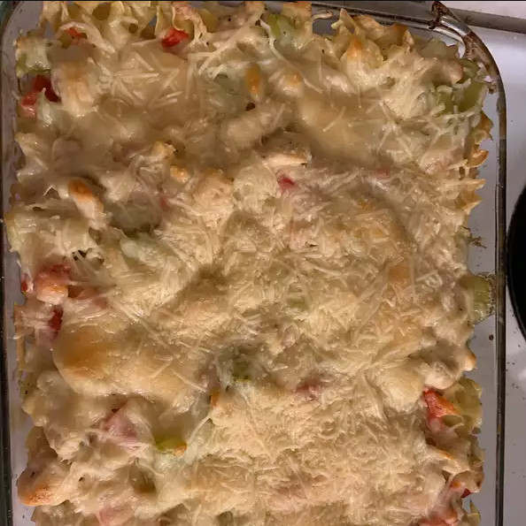

Asparagus and Chicken Casserole

Description
A delicious casserole with asparagus and chicken.
Ingredients
- 1 (8 ounce) package egg noodles
- 1,5 tablespoons olive oil
- 1 onion, chopped
- 1 cup chopped, cooked chicken meat
- 1 red bell pepper, chopped
- 2 stalks celery, chopped
- 1 cup chicken stock
- 1,5 cups sour cream
- 0,5 teaspoon dried oregano
- 1 pound fresh asparagus, trimmed and cut into 2 inch pieces
- 8 tablespoons grated Parmesan cheese, divided
Steps
- Preheat oven to 350 degrees F (175 degrees C). Lightly grease a 1 1/2 quart casserole dish.
- Cook noodles in a large pot of boiling water for 5 minutes, or until almost tender. Drain, and rinse under cold water.
- Heat the olive oil in a heavy skillet over medium heat. Cook onion for 4 to 5 minutes, stirring frequently. Add chicken, red bell pepper, celery, and chicken stock. Bring to a boil, and simmer for 5 minutes. Stir in sour cream and oregano.
- Spread half of the chicken mixture into the prepared dish. Arrange the asparagus over the chicken, spread cooked noodles evenly over the asparagus, and top with 5 tablespoons of Parmesan cheese. Cover with the remaining chicken mixture. Sprinkle with the reserved Parmesan cheese.
- Bake 30 minutes in the preheated oven, until lightly brown.